| << Previous: Formal Grammar | Up: Table of Contents | Next: SMILES Output >> |
An atom is represented by its atomic symbol, enclosed in square brackets, []. The first character of the symbol is uppercase and the second (if any) is lowercase, except that for aromatic atoms (see below), the first character is lowercase.
Following the atomic symbol, the atom's hydrogen count and charge can be specified.
If no hcount is specified, it is identical to H0. If H is specified without a number, a count of 1 is implied. For example, [C] and [CH0] are identical, and [CH] and [CH1] are identical.
Hydrogens that are specified in brackets with this notation have undefined isotope, no chirality, no other bound hydrogen, neutral charge, and an undefined atom class.
For backwards compatibility, a general-purpose SMILES parser should accept the symbols "--" and "++" to mean charges of -2 and +2 but this is a deprecated form and should be avoided.
Question: are more than 9 hydrogens possible? Should they be supported?
Question: do we need to allow two digit charges, like "+10"?
Examples:
| [CH4] | methane | zero charge implied |
| [ClH] | hydrochloric acid | H1 implied, zero charge implied |
| [ClH1] | hydrochloric acid | zero charge implied |
| [Cl-] | chloride anion | H0 implied, -1 charge implied |
| [OH1-] | hydroxyl anion | -1 charge implied |
| [OH-1] | hydroxyl anion | H1 implied |
| [Cu+2] | copper cation | H0 implied |
| [Cu++] | copper cation | +2 charge, H0 implied |
There are 111 valid atomic symbols defined by IUPAC (see also Web Elements).
Isotopic specification is placed inside the square brackets for an atom preceeding the atomic symbol; for example:
| [13CH4] | methane-13C |
| [2H+] | deuterium ion |
| [238U] | uranium 238 atom |
An isotope is interpreted as a number, so that [2H], [02H] and [002H] all mean deuterium. If the isotope field is not specified then the atom is assumed to have the naturally-occuring isotopic ratios. The isotope value 0 also indicates an isotope of zero, that is [0S] is not the same as [S].
There is no requirement that the isotope is a genuine isotope of the element. Thus, [36Cl] is allowed even though [35Cl] and [37Cl] are the actual known stable isotopes of chlorine.
A general-purpose SMILES parser must accept at least three digits for the isotope and values from 0 to 999.
A special subset of elements called the "organic subset" of B, C, N,O, P, S, F, Cl, Br, I, and * (the "wildcard" atom) can be written using the only their atomic symbol (that is, without the square brackets, H-count, etc.). When an atom is specified this way has the following properties:
The implicit hydrogen count is determined by summing the bond orders of the bonds connected to the atom. If that sum is equal to a known valence for the element or is greater than any known valence then the implicit hydrogen count is 0. Otherwise the implicit hydrogen count is the difference between that sum and the next highest known valence.
The "normal valence" for these elements is defined as:
| Element | Valence |
| B | 3 |
| C | 4 |
| N | 3 or 5 |
| O | 2 |
| P | 3 or 5 |
| S | 2, 4, or 6 |
| halogens | 1 |
| * | unspecified |
Examples:
| C | methane |
| N | ammonia |
| Cl | hydrochloric acid |
Note: The remaining atom properties, chirality and ring-closures, are discussed in later sections.
The '*' atom represents an atom whose atomic number is unknown or unspecified. If it occurs inside brackets, it can have its isotope, chirality, hydrogen count and charge specified. If it occurs outside of brackets, it has no assumed isotope, a mass of zero, unspecified chirality, a hydrogen count of zero, and a charge of zero.
| Oc1(*)ccccc1 | ortho-substituted phenol |
The '*' atom does not have any specific electronic properties or valence. If specified outside of square brackets, it takes on the valence implied by its bonds. If it is inside square brackets, it takes on the valence implied by its bonds, hydrogens and/or charge.
A '*' atom can be part of an aromatic ring. When deducing the aromaticity of a ring system, the ring system is considered aromatic if there is an element which could replace the '*' and make the ring system meet the aromaticity rules (see aromaticity, below).
An "atom class" is an arbitrary integer, a number that has no chemical meaning. It is used by applications to mark atoms in ways that are meaningful only to the application. Multiple atoms may be labeled with the same atom class.
If the atom class is not specified then the atom class is zero. The atom class is interpreted as a number, so both "[CH2:5]" and "[NH4+:005]" have an atom class of 5.
A SMILES parser must accept at least four digits for the class number, and the values 0 to 9999.
Atoms that are adjacent in a SMILES string are assumed to be joined by a single or aromatic bond (see aromaticity). For example:
| CC | ethane |
| CCO | ethanol |
| NCCCC | n-butylamine |
| CCCCN | n-butylamine |
Double and triple bonds are represented by '=' and '#', respectively:
| C=C | ethene |
| C#N | hydrogen cyanide |
| CC#CC | 2-Butyne |
| CCC=O | propanal |
A single bond can be explicitely represented with '-', but it is almost never necessary.
| C-C | same as: CC |
| C-C-O | same as: CCO |
| C-C=C-C | same as: CC=CC |
Note: The remaining bond symbols, ":.\/", are syntactically equivalent to the single, double and triple-bond symbols (they may appear anywhere a bond symbol is allowed), but the semantics are discussed in later sections.
An atom with three or more bonds is called a branched atom, and is represented using parentheses.
| 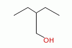 | CCC(CC)CO | 2-Ethyl-1-butanol |
Branches can be nested or "stacked" to any depth:
| 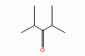 | CC(C)C(=O)C(C)C | 2,4-dimethyl-3-pentanone |
| pic here | OCC(CCC)C(C(C)C)CCC | 2-propyl-3-isopropyl-1-propanol |
| 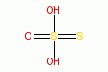 | OS(=O)(=S)O | thiosulfate |
The SMILES branch/chain rules allow nested parenthetical expressions (branches) to an arbitrary depth. Some SMILES strings in standard databases contain over 30 levels of branches, and much deeper nesting is possible. A general purpose parser must handle at least 100 levels, and should handle 1000 or more. For example, the following SMILES, though peculiar, is legal:
| C(C(C(C(C(C(C(C(C(C(C(C(C(C(C(C(C(C(C(C(C))))))))))))))))))))C | C22H46 |
In a SMILES string such as "C1CCCCC1", the first occurance of a ring-closure number (an "rnum") creates an "open bond". When that same rnum is encountered later in the string, a bond is made between the two atoms, which typically forms a cyclic structure.
| 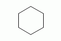 | C1CCCCC1 | cyclohexane |
| 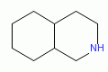 | N1CC2CCCC2CC1 | perhydroisoquinoline |
If a bond symbol is present between the atom and rnum, it can be present on either or both bonded atoms. However, if it appears on both bonded atoms, the two bond symbols must be the same.
| C=1CCCCC=1 | cyclohexene | |
| C=1CCCC1 | cyclohexene (preferred form) | |
| C1CCCC=1 | cyclohexene | |
| C-1CCCC=1 | invalid |
Ring closures must be matched pairs in a SMILES string, for example, "C1CCC" is not a valid SMILES.
It is permissable to re-use ring-closure numbers. Once a particular number has been encountered twice, that number is available again for subsequent ring closures.
| 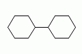 | C1CCCCC1C1CCCCC1 | dicyclohexyl | both SMILES are valid |
| C1CCCCC1C2CCCCC2 | dicyclohexyl |
Note that the ring number zero is valid, for example cyclohexane can be written "C0CCCCC0".
Two-digit ring numbers are permitted, but must be preceeded by the percent "%" symbol, such as "C%25CCCCC%25" for cyclohexane. Three-digit numbers and larger are never permitted. However, note that three digits are not invalid; for example, "C%123" is the same as "C3%12", that is, an atom with two rnum specifications.
The digit(s) representing a ring-closure are interpreted as a number, not a symbol, and two rnums match if their numbers match. Thus, C1CCCCC%01 is a valid SMILES and is the same as C1CCCCC1. Likewise, C%00CCCCC%00 is a valid SMILES.
A single atom can have several ring-closure numbers, such as this spiro atom:
| 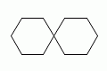 | C12(CCCCC1)CCCCC2 | name? |
Aromaticity can be represented in one of two ways in a SMILES. The Kekulé form is always acceptable. For convenience and to provide a normalized form for output, an atom symbol that begins with a lowercase letter is aromatic. For example:
| 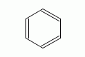 | c1ccccc1 C1=CC=CC=C1 | benzene |
| 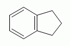 | c1ccc2CCCc2c1 C1=CC=CC(CCC2)=C12 | indane |
| 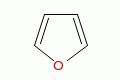 | c1occc1 C1OC=CC=C1 | furan |
Aromaticity is deduced and/or confirmed by a SMILES parser. In an aromatic system, all atoms in the ring system must be sp2 hybridized, and the number of Pi electrons must meet Hückel's 4N+2 criterion.
This meaning of aromaticity for SMILES is strictly for cheminformatics purposes. It is not intended to imply anything about the physical or chemical properties of a substance. In many or most cases, the SMILES definition of aromaticity will match the chemist's notion of what is aromatic, but in some cases it will not. The SMILES definition of aromaticity is designed to facilitate normalization of SMILES, not to predict chemical properties.
This definition of aromaticity needs considerable work. For a good summary of the question of aromaticity, see:
http://wiki.cubic.uni-koeln.de/cdkwiki/doku.php?id=smiles_aromaticity
The definition below is the one that Daylight has described in public meetings, but I believe there are more subtle rules that Daylight actually use in their SMILES Toolkit. -- CJ
The formal meaning of a lowercase "aromatic" element in a SMILES string is that the atom is in the sp2 electronic state. When generating a normalized SMILES, all sp2 atoms are written using a lowercase first character of the atomic symbol. When parsing a SMILES, a parser must note the sp2 designation of each atom on input, then when the parsing is complete, the SMILES software must verify that electrons can be assigned without violating the valence rules, consistent with the sp2 markings, the specified or implied hydrogens, external bonds, and charges on the atoms.
This implies that the lowercase atomic symbols do not necessarily represent aromatic atoms. For example:
| 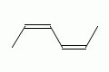 | CccccC CC=CC=CC |
2,4-hexadiene (both SMILES are valid) |
| 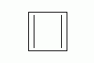 | c1ccc1 C1=CC=C1 |
cyclobutadiene (both SMILES are valid) |
| CcccC | Invalid SMILES electrons can't be assigned |
Even numbers of adjacent lower case "c" or "n" are interpreted as conjugated chains. So cccc is 1,3 butadiene, Ccc is propene, C1ccccC1 is 1,3 cyclohexadiene and CnnC is azomethane.
Hydrogens in a SMILES can be represented in three different ways:
| implicit hydrogen | C | methane | h-count deduced from normal valence (4) |
| atom property | [CH4] | methane | h-count specified for heavy atom |
| explicit hydrogens | [H]C([H])([H])[H] | methane | hydrogens represented as normal atoms |
All three forms are equivalent. However, some situations require that one form must be used:
A hydrogen that meets one of the following criteria must be represented as an explicit atom:
It is permissible to use a mixture of an atom h-count and explicit hydrogen. In such a case, the atom's hydrogen count is the sum of the atomic h-count property and the number of attached hydrogens. For example:
| [CH4] | methane |
| [H][CH2][H] | methane |
| [2H][CH3]C | deuteroethane |
The dot '.' symbol (also called a "dot bond") is legal most places where a bond symbol would occur, but indicates that the atoms are not bonded. The most common use of the dot-bond symbol is to represent disconnected and ionic compounds.
| 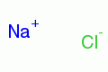 | [Na+].[Cl-] | sodium chloride |
| 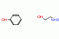 | Oc1ccccc1.NCCO | phenol, 2-amino ethanol |
| 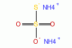 | [NH4+].[NH4+].[O-]S(=O)(=O)[S-] | diammonium thiosulfate |
The dot can appear anywhere that a bond symbol is allowed, for example, the phenol example above can also be written:
| c1cc(O.NCCO)ccc1 | phenol, 2-amino ethanol | |
| Oc1cc(.NCCO)ccc1 | phenol, 2-amino ethanol |
The second example above is an odd, but legal, use of parentheses and the dot bond, since the syntax allows a dot anywhere a regular bond could appear.
Although dot-bonds are commonly used to represent compounds with disconnected parts, a dot-bond does not in itself mean that there are disconnected parts in the compound. See the following section regarding ring digits for some examples that illustrate this.
A ring-number specifications ("rnum") is most commonly used to specify a ring-closure bond, but when used with the "." dot-bond symbol, it can also specify a non-ring bond. Two rnums in a SMILES mean that the two atoms are bonded. A dot-bond "." means that the atoms to which it is adjacent in the SMILES string are not bonded to each other. The following SMILES illustrate this feature of SMILES:
| CC | C1.C1 | ethane |
| CCC | C1.C12.C2 | propane |
| 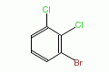 | c1c2c3c4cc1.Br2.Cl3.Cl4 | 1-bromo-2,3-dichlorobenzene |
This feature of SMILES provides a convenient method of enumerating the molecules of a combinatorial library using string concatenation.
A SMILES string can specify the cis/trans configuration around a double bond, and can specify the chiral configuration of specific atoms in a molecule.
SMILES strings do not represent all types of stereochemistry. Examples of stereochemistry that cannot be encoded into a SMILES include:
SMILES uses an atom-centered chirality specification, in which the atom's left-to-right order in the SMILES string itself is used as the basis for the chirality marking.
| Tetrahedral Chirality | |
| look from N toward C (chiral center)... | list the neighbors anticlockwise |
| 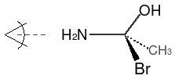 | N[C@](Br)(O)C |
| ...or clockwise | |
| N[C@@](Br)(C)O | |
For the structure above, starting with the nitrogen atom, one "looks" toward the chiral center. The the remaining three neighbor atoms are written by listing them in anticlockwise order using the '@' chiral property on the atom, or in clockwise order using the '@@' chiral property, as illustrated above. The '@' symbol is a "visual mnemonic" in that the spiral around the character goes in the anticlockwise direction, and means "anticlockwise" in the SMILES string (thus, '@@' can be thought of as anti-anticlockwise).
A chiral center can be written starting from any of its neighbor atoms, and the choice of whether to list the remaining neighbor in clockwise or anticlockwise order is also arbitrary. The following SMILES are all equivalent and all specify the exact same chiral center illustrated above:
| N[C@](Br)(O)C | Br[C@](O)(N)C |
| O[C@](Br)(C)N | Br[C@](C)(O)N |
| C[C@](Br)(N)O | Br[C@](N)(C)O |
| C[C@@](Br)(O)N | Br[C@@](N)(O)C |
If one of the neighbor atoms is a hydrogen and is represented as an atomic property of the chiral center (rather than explicitely as [H]), then it is considered to be the first atom in the clockwise or anticlockwise accounting. For example, if we replaced the bromine in the illustration above with a hydrogen atom, its SMILES would be:
| N[C@H](O)C |
Note: Daylight's chirality specification is much more complete than this, and includes square planar, octahedral, and trigonal-bipyramidal configurations. Each of these is a assigned a symbol, e.g. '@' is simply a shorthand for '@TH1'. This section should be extended to include the full chirality specification, even though most non-Daylight SMILES parsers are not capable of processing these chiral configurations.
The configuration of atoms around double bonds is specified by the bond symbols '/' and '\'. These symbols always come in pairs, and indicate cis or trans with a visual "same side" or "opposite side" concept. That is:
| 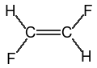 | F/C=C/F F\C=C\F |
trans-difluoroethene (both SMILES are equivalent) |
| 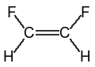 | F\C=C/F F/C=C\F |
cis-difluoroethene (both SMILES are equivalent) |
The "visual interpretation" of the '/' and '\' symbol is that they are thought of as bonds that "point" above or below the allenal carbon. That is, "F/C=C/Br" means "The F is below the first carbon, and the Br is above the second carbon," leading to the interpretation of a trans configuration.
This notation can be confusing when parentheses follow one of the allenal carbons:
|
F/C=C/F C(\F)=C\F |
trans-difluoroethene |
|
F\C=C/F C(/F)=C/F |
cis-difluoroethene |
The "visual interpretation" of the "up-ness" or "down-ness" of each single bond is relative to the carbon atom, not the double bond, so the sense of the symbol changed when the fluorine atom moved from the left to the right side of the allenal carbon atom.
Note: This point was not well documented in earlier SMILES specifications, and several SMILES interpreters are known to interpret the '/' and '\' symbols incorrectly.
A SMILES with conflicting up/down specifications is invalid:
| C/C(\F)=C/F | Invalid SMILES: Both the methyl and fluorine are "down" relative to the first allenal carbon. |
It is permissible, but not required, that every atom attached to a double bond be marked. As long as at least two neighbor atoms, one on each end of the double bond, is marked, the "up-ness" or "down-ness" of the unmarked neighbors can be deduced.
| F/C(C)=C/F | trans-difluoro configuration, position of methyl is implied |
Extended cis and trans configurations can be specified for conjugated allenes with an odd number of double bonds:
| F/C=C=C=C/F | trans-difluorobutatriene |
| F/C=C=C=C\F | cis-difluorobutatriene |
Extended tetrahedral configurations can be specified for conjugated allenes with an even number of double bonds. The normal tetrahedral rules using '@' and '@@' apply, but the "neighbor" atoms to which the chirality refers are at the ends of the allenal system. For example:
| 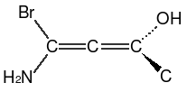 | NC(Br)=[C@]=C(O)C |
To determine the correct clockwise or anticlockwise specification, the allene is conceptually "collapsed" into a single tetrahedral chiral center, and the resulting chirality is marked as a property of the center atom of the extended allene system.
SMILES allows partial stereochemical specifications. It is permissible for some chiral centers or double bonds to have stereochemical markings in the SMILES, while others in the same SMILES string do not. For example:
| F/C=C/C/C=C\C | completely specified |
| F/C=C/CC=CC | partially specified |
| N1[C@H](Cl)[C@@H](Cl)C(Cl)CC1 | partially specified |
The SMILES language supports a number of atom-centered chiral configurations:
TH Tetrahedral AL Allenal SP Square Planar TB Trigonal Bipyramidal OH Octahedral
The shorthand notations '@' and '@@' correspond to clockwise and anti-clockwise tetrahedral chirality, and are the same a '@TH1' and '@TH2', respectively. Likewise, in an allenal configuration, the shorthand notations '@' and '@@' correspond to '@AL1' and '@AL2', respectively.
Very few SMILES systems actually implement the rules for SP, TB or OH chirality.
NEED COMPLETE DOCUMENTATION for SP, TB and OH.
A SMILES string is terminated by a whitespace terminator character (space, tab, newline, carriage-return), or by the end of the string.
Other data or information, such as a name, properties, registration number, etc., may follow the SMILES on a line after the whitespace character. SMILES parsers will ignore this data, although applications that use the SMILES parser will often make use of it.
| << Previous: Formal Grammar | Up: Table of Contents | Next: SMILES Output >> |
Copyright © 2007, Craig A. James
Content is available under GNU Free Documentation License 1.2